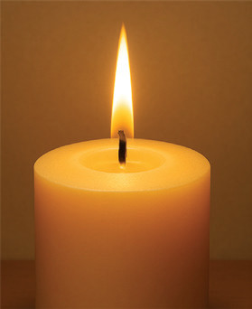
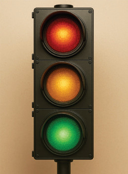
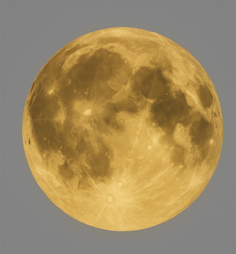
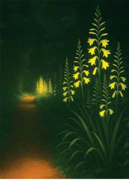
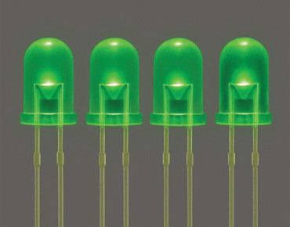
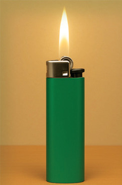
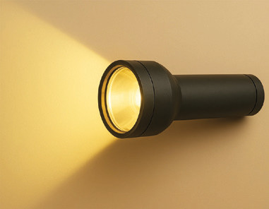

Propagation and transmission of light
The propagation and transmission of light are foundational concepts in understanding how light behaves as it travels and interacts with different media. Light moves at incredible speeds and interacts with various materials in unique ways. This phenomenon encompasses a variety of processes, including reflection, refraction, and absorption, all of which play a crucial role in how we perceive our surroundings.
Rays and beams of light
To explore the concept of a ray and a beam of light, perform Activity 4.1 and Activity 4.2

Aim: To explore rays and beams of light
Procedure
1. Create a single small hole at the centre of the cardboard. Ensure the hole is just big enough for a narrow beam of light to pass through. We will use this narrow beam of light as a model of a ray of light.
2. Turn on the flashlight and place the cardboard in front of it, allowing the light